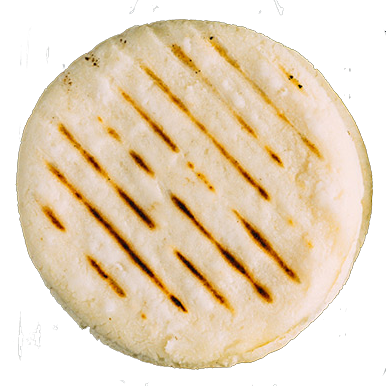

Arepa

Description: A traditional Venezuelan staple, you can fill it with anything.
Ingredients:
- 2 cups of pre-cooked white cornmeal (Harina PAN)
- 2 ½ cups of warm water
- 1 teaspoon of salt
- 1 tablespoon of oil (for cooking)
Equipment:
- Large mixing bowl
- Frying pan or griddle
- Spatula
Instructions:
- Mix the Dough: In a large mixing bowl, combine 2 cups of pre-cooked white cornmeal and 1 teaspoon of salt. Gradually add 2 ½ cups of warm water, mixing with your hands until a smooth dough forms. Let the dough rest for about 5 minutes to hydrate fully.
- Shape the Arepas: Divide the dough into 8 equal portions. Roll each portion into a ball and then flatten it into a disc about ½ inch thick.
- Cook the Arepas: Heat 1 tablespoon of oil in a frying pan or griddle over medium heat. Place the arepas in the pan, ensuring they are not overcrowded. Cook for about 5-7 minutes on each side, until a golden crust forms. They should sound hollow when tapped.
- Finish in the Oven (Optional): For a fluffier interior, preheat your oven to 350°F (175°C). After frying, transfer the arepas to a baking sheet and bake for an additional 10-15 minutes.
- Serve: Let the arepas cool slightly, then slice them open like a pita pocket. Fill with your favorite ingredients such as cheese, ham, chicken, avocado, or beans.